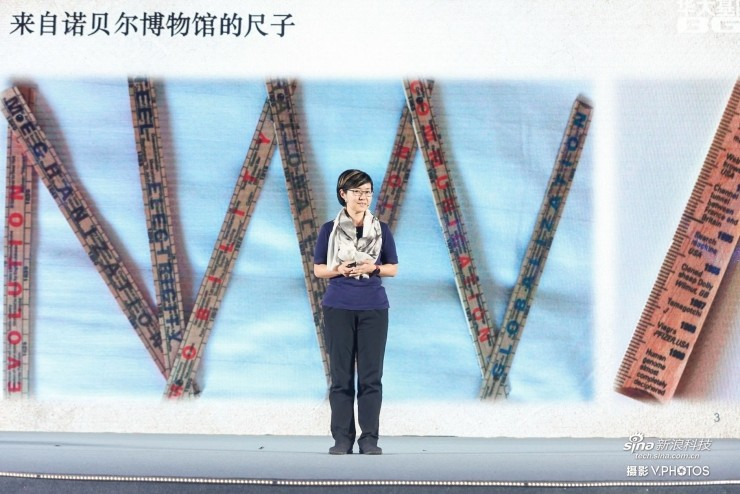

华大基因：生命时代开启，基因工程发展超“摩尔定律”
什么是生命时代？ 怎么讲生命时代？所有的生命，不管是人、动植物、微生物都是ATCG，这个世界就是这么简单，就是这么奇妙。而在上世纪最重要的一件事情就是把ATCG变成了0101。这把尺子是在4年前诺贝尔博物馆发现的，这是一个发明的尺子，一共有两米长，正反两面打开是这样子的。每一个刻度上都是一个重大的历史事件，要么就是社会的，要么就是科学技术的。大家可以看到最后的几个，基本上都是跟中国没有关系的，要么就是重大的，包括克隆绵羊，包括新药的发现，包括数码相机，这是在2000年最后的几年。但是最后这个就是人类基因组计划差不多要完成。 为什么在1800年到2000年的尺度上，要把最后这一年把这个留下？ 其实就意味着在上世纪结束的时候，我们开启了生命时代。
这个生命时代从上世纪初开始的人类基因组计划一直到2003年全部完成，2000年只是草图问题，但是在诺贝尔博物馆的尺子是不可以忘记这个时刻。所以在过去十几年的成本，白色的这条线是摩尔定律，我想没有人不知道。这条绿色线就是人类基因组下降图，华大基因跟这条线非常有渊源。前一个就是华大基因的成立，我们在1999年成立，就是为了代表中国参与这样一个人类基因组计划。到了第二个时点，就是华大基因离开北京，我们叫天高皇帝远，去了最创新、最包容、最容纳奇形怪状的城市，我们去了深圳。然后就带来了我们在之后的几年占到全球40%的数据产出量，因为我们就是把ATCG变成了0101。到了2010年，我们一下子买了128台的测序仪，基本上把这个厂家两年的货全部买断。 我们后来收购了美国的公司，推出了自己的测序仪， 在这个领域，我们在其中作为中国人从来没有在技术上做过这样的贡献。

这个超“摩尔定律”用一个形象的比喻大家可以记住，2003年完成一个人基因组的时候，相当于一架隐性形战机，到了2013年10年之后相当于一辆经济型轿车，再到未来，我估计可能会比700块还要便宜，也许就相当于一辆自行车的价钱，这就是超“摩尔定律”。 通过基因编辑治疗疾病 这是我在奇点大学听的一堂课，在这里面非常有趣的是可以看到整个讲的一个由华大推动这个领域变化的故事，测序如何把成本降下来，如何打开这扇门。大家看到了吗？华大基因的缩写是BGI，我们在这里打开了这扇门。而且下面这个门挡，像一个饼干形状的，就是我们自己在香港平台上做的一个学术期刊，叫《大数据》。今年刚刚公布影响因子，已经占到了全球综合类期刊的第六名，这是非常了不起的，中国没有一个期刊可以做到这样，这是一个国际化的期刊。这是一个门挡，通过它让这个门不再合上，这就是今天大数据带来的影响。 后面还有很多，比如基因剪切，比如未来的红酒，会用人工合成的酵母去做，比如说未来的疾病可以去通过基因编辑的方法改变。我们已经有了一个白血病的孩子，通过基因编辑彻底治愈的。像很多这样的可能，生命都通过基因测序开始打开了这扇门，让你真正认识生命。这个人很年轻，他是奇点大学生物系的主任，他的虎口上按了一个芯片，可以通过这个芯片操纵他的电脑，操纵他的车，甚至还有他们的家门。我非常欢迎我们，我们去的时候他很激动，整个这个漫画都是他在课堂上请了一个画漫画的人边听他讲边画的。我跟他握手的时候有点这个感觉， 让我想到了穿越，未来的人和基因融合其实就是从今天开始，只有生命的数字化才能做到。

这是在2012年《时代周刊》的封面，想知道我的未来吗？这个孩子有很多的遗传出生缺陷。因为没有人是完美的，可能你在几岁的时候不知道，但是年老的时候也同样会显现出来，所以没有一个人是完美的，每一个人身上都会携带各种各样的疾病或者问题，或者是提前衰老的可能。那么如何来知道？必须要通过测序。这一篇是说我不想在这儿终结，也就是说，所有的疾病应该从预防着手，《黄帝内经》都讲了，上医治未病，也是一样的道理。 我选了三个《时代周刊》的封面文章，最后这个孩子说，我会活到143岁，我可能会活到。的确，从理论上讲，细胞的衰亡是可以使人活到120岁、150岁的时间。那么会带来非常多的问题，比如说衰老问题，阿尔茨海默、帕金森、骨质疏松，各种各样的问题。怎么样解决？其实这三张图非常标志性的告诉我们，遗传性疾病，像肿瘤这样的基因突变病怎么避免，特别是像“三高”甚至是“四高”这样的疾病，怎么调整肠道当中的菌群去避免。 这三张图非常有代表性，我把它分享给大家，告诉大家，这个生命的时代，其实远远比我们今天这个时代的人了解的来得还要快，还要迅猛。就像三十年前没有人相信IT可以这样改变世界一样，可以这样讲，三十年前IT还是一个单独的领域，甚至在十年、二十年前还是一个单独的领域，但是今天IT无所不在了，在改变各个领域，最传统的领域，最新鲜的领域。生命也是一样，生命这个领域会从农业、 医疗、健康、环保、工业方方面面，所有只要是活的东西，一切都会改变，就是数字化带来的。未来生活将会智能化 所以可以讲，在过去的时候，工业化就是信息把这个通道连接起来的。实际上人是世界万物的一点点，人非常渺小，而且人本身就是一个宿主，你口腔、肠道、皮肤里的微生物远远比你想像的多得多，比你的父母给你的多得多，人肠道里面的基因是你身上的一百倍。人如何和这些微生物共生？如何防止基因的衰老和突变，这是内环境和外环境的交互，健康的交互，这才是最重要的。 在这沧海一粟当中人如何认识自己？自己身体的密码是什么？大家想想过去一两百年的工业革命，其实汽车是工业之花，汽车是作为的电器、机械、材料，是工业之花。但是汽车改变它的就是想起来还记得甲壳虫和福特吗？他们叫人人都用得了汽车，其实今天的测序也是一样，未来人人都必须，而且不是像车一样，可能终身用十辆最多了，但是测序会在你身边无所不在。 有一天你的马桶上会有一个检测，告诉你，你每个月的激素周期如何变化。用一天你通过皮肤测试就能知道，为什么你青春期的时候长痘痘，别的时候都不长，是你的激素和皮肤在发生变化呢。有一天你会知道，你作为妈妈，为什么宝宝吃了你的奶就会拉肚子，这个便便的健康程度到底是什么样的，为什么有的人能喝酒脸不红，所以很多。这些东西都会打开生命的密码，而我们知道，从人人都有汽车到人人用得上PC，到人人都可以用网络，未来人人都能够了解自己的生命。这是在深圳，面朝大海、背靠青山的地方，这是我们的第一个基因库，很快就会变成全球数据量最大、最先进的平台，希望大家有机会可以去看一看，从那里走向真正认识自己的生命。 健康需要量化 最后我想跟大家分享，其实生命是一个时钟，很多时候我们的公司追求财务报表，我们有资产负债表，我们有资产的评价，其实健康没有量化，其实到今天健康没有定义，什么叫健康，什么叫不健康？我登山跑步的时候，我的心律可能只有48、49次或者是50次，医生说你有点心律过缓，我知道我自己。包括你的血压，你的各种生命指标，其实都是需要有一个量化。 什么叫你的健康？很多时候对于健康的认识，对于疾病的认识才刚刚开始，而这个就是真正数字化的过程。过去我们很多经验科学试错的过程，而今天真正要把它从ATCG变成0101。所以人不能仅仅有一个财务帐号，还应该有健康帐号。当你跑了一次步，运动了一次，出了一次大汗，你就在向你的健康帐户里面存一笔钱。所以我想人至少应该建立自己的健康信用，而这个健康信用的评估是全面依赖于生命时代打开的时候，你如何认识你的生命，如何认识你周围所有的一切。 甚至包括我们今天谈到很多城市，今天我们在基因库那里会有一个小小的电视屏幕，之所以不想弄得太大，怕太刺激。因为在我们那里，PM2.5基本上是在个位数。那么当你在这样一个城市，这个城市是为了人，当你这样的城市发展的时候，你究竟是为了谁？当你去填海，破坏那些礁石砾，破坏那些珊瑚，破坏海洋里的鱼类的时候你是为了什么？所有这一切回到我刚才讲的，当你走进生命时代，重新认识你吃的东西，农业、医疗、健康、环境、水、土壤以及城市里所有的所有。 所以我觉得现在才是已经开启了这个大门，很多人还没有看到门内究竟是什么，甚至华大基因很多人都认为我们只是做测序而已，有的人也说我们是生物领域的富士康。其实远非如此，所以今天也是跟大家开个头，希望大家持续关注，关注你自己，谢谢大家！